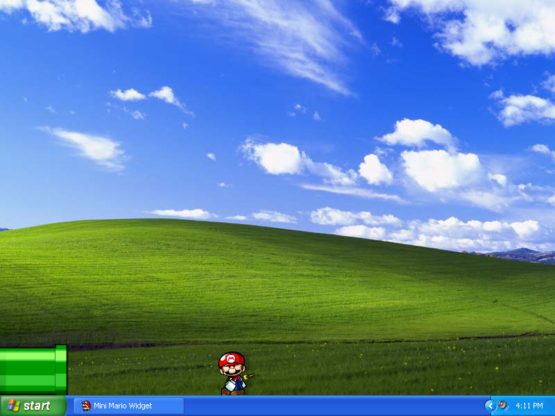
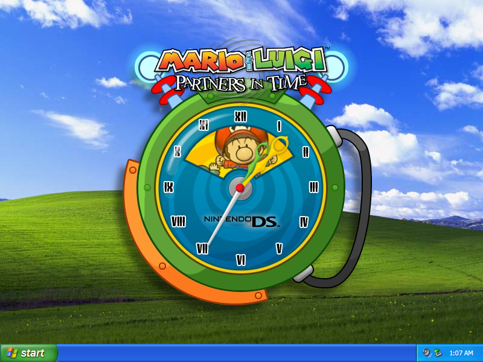
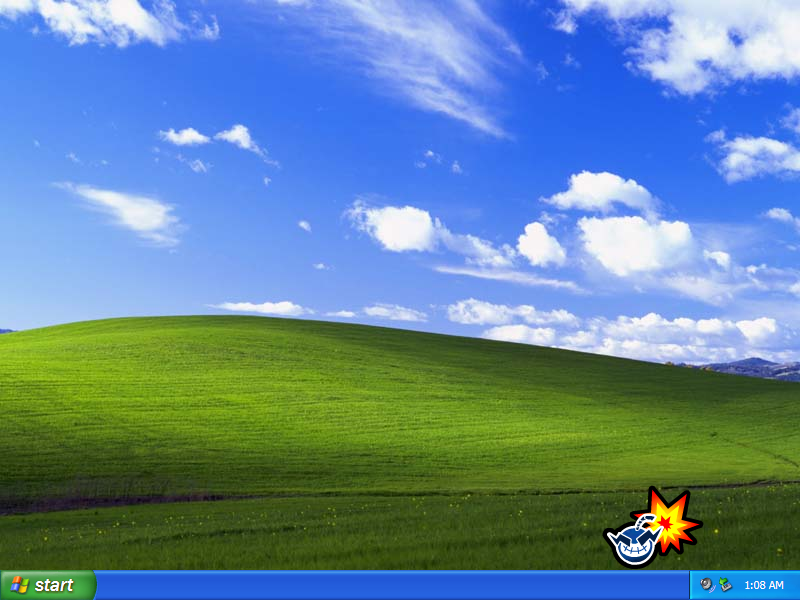

Extra Mario Downloads

Mario vs. Donkey Kong 2 Widget
A Mini-Mario that walks around on your desktop. You can drag it around and change its direction using the mouse. It walks and jumps around on windows. The pipe sends it back to the top.

DOWNLOAD
 .exe file zipped (1.45 MB)
.exe file zipped (1.45 MB)
Mario & Luigi: Partners in Time Clock Widget

DOWNLOAD
.exe file zipped (1.10 MB)
WarioWare: Touched! Widget
A WarioWare bomb that you can fling around on your desktop.

DOWNLOAD
.exe file zipped (736 KB)
Windows Media Player Skin

DOWNLOAD
.wmz file zipped (839 KB)
Stickers and Iron-Ons